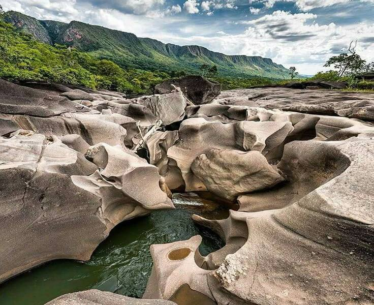
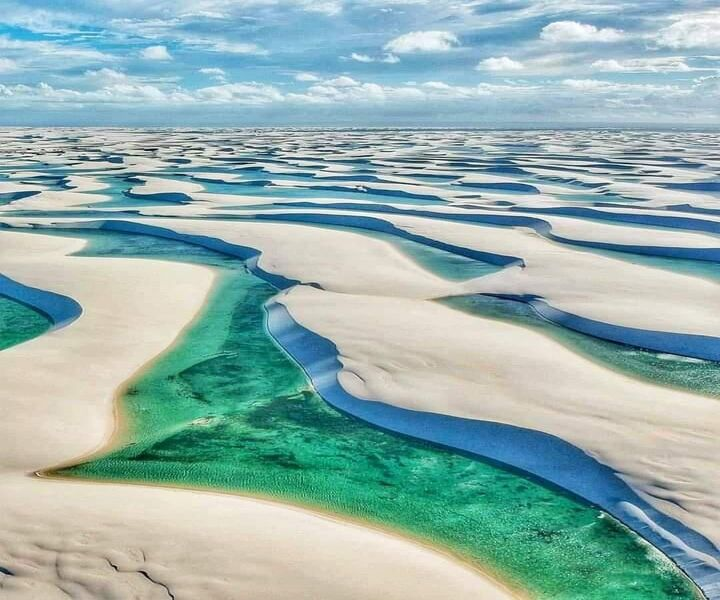
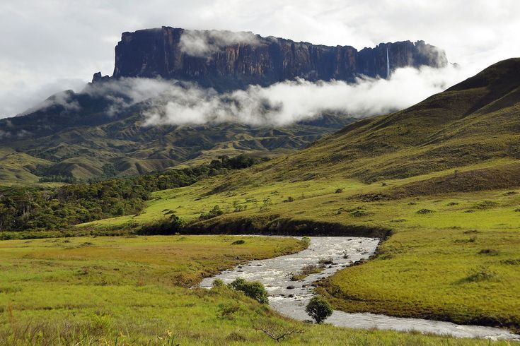

Vale da Lua - Chapada dos Veadeiros (GO)
Formações rochosas acinzentadas e crateras esculpidas pelas águas do rio São Miguel que recriam perfeitamente a superfície lunar no coração do cerrado.
Destinos Surreais
Três lugares que todo mundo deveria visitar algum dia.

Formações rochosas acinzentadas e crateras esculpidas pelas águas do rio São Miguel que recriam perfeitamente a superfície lunar no coração do cerrado.

Um deserto sem fim de areias incrivelmente brancas, pontilhado por lagoas de água doce cristalina verde e azul. Um oásis que desafia qualquer lógica.

Uma montanha de topo plano (tepuí) que se ergue imponente acima das nuvens. Suas rochas escuras, cachoeiras gigantes e flora única dão uma atmosfera de "Mundo Perdido" e pré-histórico.